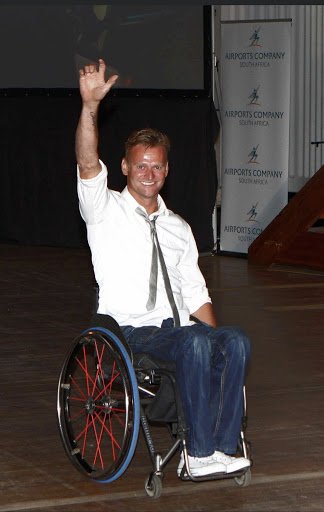

Elin Bååth
Embracing the cycles of nature
Elin Bååth is an activist, ecofeminist, teacher, artist - and a witch. She has a master degree in religion and teaches literature, writing and speech to adults. She represented the Feminist Initiative party in the City Council of Gotland for four years and now runs a podcast on witchcraft, feminism, society and change, called Förmödrars makt
More info:
linktr.ee/EldinEarthWitch
In this Tedx talk Elin speaks about why we need to bring back the ancient knowledge of a circular world - of the changing seasons of the earth, moon and our own bodies. Not only for the sake of our own health, but for the health of the earth and a sustainable society.

Niclas Rodhborn
Stepping out of hardship
Niclas Rodhborn is a Eurosport commentator, 2004 and 2008 Paralympic Games player in wheelchair-basketball and wheelchair-tennis, 2016 Rio de Janeiro games team captain, aiming to lead his team in the Tokyo Games next year. He has earned the 11th position for best player in tennis singles and doubles, also winning the 2007 European Wheelchair Basketball Championships with the Swedish team – a victory which has never been achieved before. However, before all his success Niclas Rodhborn had faced a critical accident and a hard loss. Taking through his emotional journey, he will talk about how he brought himself out of tragedy and the strength he needed to recover.
Alec Arho-Havrén
Change gears towards a new economy by decarbonising transport
Alec Arho-Havrén has many ventures up his sleeve - founder of the World Ecological Forum, initiator for SmartRoad Gotland (the world’s first dynamic charging electric road system on a public road for buses and heavy trucks), developer of Smart Energy Road and Traffic System (SERTS, an energy harvesting smart infrastructure concept), founder and circuit architect of GotlandRing, the world’s first sustainable race and test circuit, a frequent speaker on transport electrification, innovation and green leadership.
In his talk, Alec will focus on the paradigm shift within energy, a diversified transport electrification and dynamic policy making, as enabling factors for decarbonising the economy. This talk focuses on recommending a paradigm shift lead by a dynamic mixture of electrification - battery electric, fuel cell electric, and synthetic electro fuels (eFuels are produced from CO2 and hydrogen; using renewable energy, it enables ICE vehicles to run in a more sustainable way)…this in combination with electric road systems (both inductive and conductive), can totally neutralise the negative threat of transport - on wheels, in the air, and by sea. When and how the various propulsion methods will be implemented, depend on not only the various evolutionary phases, but also of the levels of abundance of renewable energy sources and their respective cost curves…